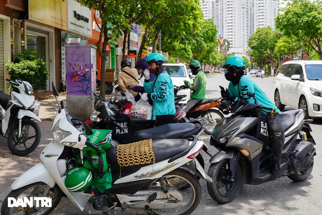
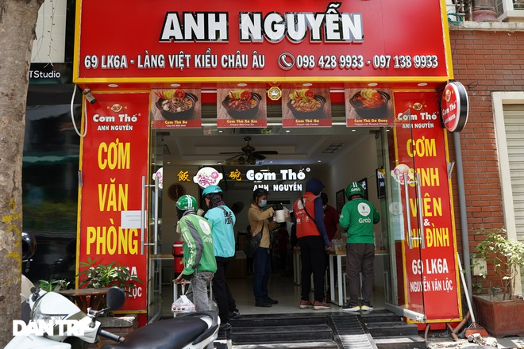

Tin liên Quan
Hà Nội: Đội nắng 40 độ C, shipper làm không hết việcNgười vận chuyển" kiếm tiền triệu mỗi ngày giữa mùa dịch
Shipper ở Hà Nội "cháy đơn" đợt nắng nóng, thu nhập không cao như lời đồn
Đợt cao điểm nắng nóng ở Hà Nội, nhu cầu giao nhận hàng hóa tăng đột biến khiến dịch vụ này càng đắt khách. Tuy nhiên, thu nhập một ngày của nhân viên giao đồ ăn không cao đến tiền triệu như lời đồn.

Suốt một tuần qua, thủ đô Hà Nội đang trong đợt nắng nóng cao điểm, nhiệt độ phổ biến 39 - 40 độ C, nhiệt độ ngoài trời có lúc lên đến gần 50 độ C, cộng với hơi nóng từ mặt đường phả lên càng khiến cho không khí thêm nóng bức, ngột ngạt. Dưới thời tiết này nhiều người dân ngại ra đường, nhất là vào những khung giờ cao điểm như buổi trưa, chiều, nhưng nhờ đó mà dịch vụ giao hàng tận nơi trở nên đắt khách, cánh shipper hoạt động khá nhộn nhịp.

Ghi nhận cảnh nhộn nhịp giao nhận hàng tại một cửa hàng bán đồ ăn nhanh mang về tại khu vực Hà Đông, Hà Nội trưa nay.